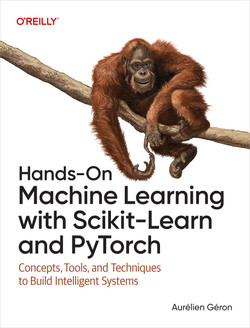

MATH60230 - Séance 9
Apprentissage automatique pour la finance empirique
Plan pour aujourd’hui
- Introduction à l’apprentissage automatique
- AA vs. économétrie : objectifs différents, vocabulaire différent
- Modèles linéaires régularisés : Lasso, Ridge, Elastic Net
- Surapprentissage et validation de modèles
- Autres modèles et prétraitement
- Clustering
Qu’est-ce que l’apprentissage automatique ?
L’apprentissage automatique est une application de l’intelligence artificielle (IA) qui offre aux systèmes la capacité d’apprendre et de s’améliorer automatiquement à partir de l’expérience sans être explicitement programmés.
- AA = algorithmes qui apprennent des patterns à partir de données pour faire des prédictions ou des décisions
- En finance : prédire les rendements, classifier les entreprises, extraire des patterns complexes
Approches de l’apprentissage automatique
- Apprentissage supervisé : L’ordinateur est présenté avec des exemples d’entrées et leurs sorties souhaitées (pensez aux MCO).
- Exemple : prédire les rendements boursiers à partir des caractéristiques des entreprises
- Apprentissage non supervisé : Aucune étiquette n’est donnée à l’algorithme, le laissant seul pour trouver une structure dans ses entrées.
- Exemple : regrouper les actions selon leurs patterns de rendement
- Apprentissage par renforcement : Un programme informatique interagit avec un environnement dynamique dans lequel il doit atteindre un certain objectif, recevant une rétroaction analogue à des récompenses, qu’il essaie de maximiser.
- Exemple : algorithmes d’exécution de transactions
Prédiction vs. inférence
Économétrie
- Estimer les effets causaux, tester des hypothèses
- Inférence sur \beta : \beta est-il significatif ? Quelle est sa magnitude ?
Apprentissage automatique
- Minimiser l’erreur de prédiction, maximiser la performance hors échantillon
- « On ne se soucie pas de \beta — on se soucie de \hat{y} »
L’AA est bon pour prévoir ou extraire des patterns complexes (non linéaires) à partir de données. L’AA n’est pas bon pour l’inférence statistique.
Vocabulaire : AA vs. économétrie
| Économétrie | Apprentissage automatique |
|---|---|
| Variable dépendante (y) | Cible / étiquette |
| Variables indépendantes (X) | Caractéristiques (features) |
| Estimation | Entraînement (training) |
| Coefficients (\beta) | Poids / paramètres |
| Échantillon | Jeu de données (dataset) |
| Hors échantillon | Jeu de test (test set) |
| Spécification du modèle | Sélection de modèle / architecture |
| Régression | Peut aussi signifier classification ! |
« Régression » en AA
- En économétrie : régression = modéliser une relation (généralement linéaire)
- En AA : régression = prédire une valeur continue (vs. classification = prédire une catégorie)
- La régression logistique est un algorithme de classification en langage AA !
Types de tâches en AA
Les tâches courantes en AA peuvent être divisées en quatre groupes :
- Classification : Identifier à quelle catégorie appartient une observation.
- p. ex., une entreprise fera-t-elle défaut ?
- Régression : Prédire une valeur continue.
- p. ex., quel sera le rendement du mois prochain ?
- Clustering : Groupement automatique d’observations.
- p. ex., regrouper les actions par comportement
- Réduction de dimensionnalité : Réduire le nombre de variables explicatives.
- p. ex., résumer 100 caractéristiques d’entreprises en quelques facteurs
Supervisé vs. non supervisé
- Supervisé : nous avons des étiquettes (y) ; apprendre une fonction X \rightarrow y
- Classification et régression
- Non supervisé : pas d’étiquettes ; trouver une structure dans X
- Clustering et réduction de dimensionnalité
- Semi-supervisé : peu de données étiquetées + beaucoup de données non étiquetées
- Moins courant, mais utile quand l’étiquetage est coûteux
scikit-learn
scikit-learn est la bibliothèque Python standard pour l’apprentissage automatique (pas l’apprentissage profond).
- API cohérente pour tous les modèles
- Modules clés :
sklearn.linear_model— modèles linéaires et régulariséssklearn.ensemble— forêts aléatoires, gradient boostingsklearn.svm— machines à vecteurs de supportsklearn.preprocessing— mise à l’échelle, encodagesklearn.model_selection— validation croisée, recherche sur grillesklearn.metrics— métriques d’évaluation
L’API Estimator
Tous les modèles scikit-learn suivent le même patron :
Cette interface cohérente facilite le remplacement d’un modèle par un autre.
Écosystème scikit-learn
Bibliothèques d’apprentissage profond
- PyTorch (né chez Facebook/Meta, géré par la PyTorch Foundation sous l’égide de la Linux Foundation depuis 2022)
- Keras (multi-backend depuis Keras 3 : fonctionne sur TensorFlow, JAX ou PyTorch)
Qu’est-ce que le surapprentissage ?
- Le modèle apprend le bruit dans les données d’entraînement au lieu du vrai pattern
- Performe bien sur les données d’entraînement mais mal sur de nouvelles données
- Analogie : mémoriser les réponses d’examen vs. comprendre la matière
Surapprentissage avec les MCO
Estimation de plusieurs modèles différents dans la même analyse statistique sur les mêmes données et sélection de celui qui optimise une fonction objectif :
- R^2
- Fonction de log-vraisemblance
- Critères d’information
- Profits générés (backtest)
Les modèles qui souffrent de surapprentissage tendent à mal performer hors échantillon.
Surapprentissage - Un modèle simple
Soient X_{t},Y_{t} nos variables avec Y_{t}=X_{t}\beta+\varepsilon_{t}
- E\left(\varepsilon_{t}X_{t}\right)=0 et \varepsilon_{t}\sim N(0,\sigma) i.i.d.
- \left\{X_{1,t},Y_{1,t}\right\} sont les données de notre échantillon principal
- \left\{X_{2,t},Y_{2,t}\right\} sont les données d’un second échantillon
Problème
Nous voulons utiliser X pour prédire Y.
Supposons que nous voulons minimiser E\left[ \left( Y_{t}-X_{t}\theta\right)^{2}\right]
Idéalement, nous devrions utiliser \theta=\beta. Mais \beta est inconnu.
Si nous n’avions que \left\{ X_{1t},Y_{1t}\right\} , nous pourrions minimiser E\left[ \left( Y_{1,t}-X_{1,t}\theta\right)^{2}\right] \Rightarrow\widehat{\theta}=\widehat{\theta}_{MCO}
Surapprentissage avec les MCO
Fait
Q_{1}=\sum_{t=1}^{T}\left( \left( Y_{1t}-X_{1t}\beta\right)^{2}-\left( Y_{1t}-X_{1t}\widehat{\theta}\right)^{2}\right)
E\left( Q_{1}\right) =k\cdot\sigma^{2} où k= dimension de X
- Les MCO tendent à sous-estimer l’erreur de prédiction (c.-à-d. « surapprentissage »)
Fait
E\left[ Q_{2}\right] =E\left[ \sum_{t=1}^{T}\left( \left( Y_{2t}-X_{2t}\beta\right)^{2}-\left( Y_{2t}-X_{2t}\widehat{\theta}\right)^{2}\right) \right] =-k\cdot\sigma^{2}
- Le surapprentissage dans l’échantillon nuit à notre performance hors échantillon.
- Plus on surapprend, plus cela nuit à notre prévision.
- Pour éviter le surapprentissage, on devrait utiliser des modèles avec une performance similaire dans l’échantillon et hors échantillon et des techniques telles que la validation croisée.
Des MCO à la régularisation
- Les MCO minimisent \sum(y_i - X_i\beta)^2
- Problème : avec beaucoup de variables, les MCO surajustent — ils ajustent le bruit dans les données d’entraînement
- Solution : ajouter un terme de pénalité pour contraindre \beta
\hat{\beta} \equiv \underset{\beta}{\operatorname{argmin}} \left( \|y - X\beta\|^2 + \text{pénalité}(\beta) \right)
Régression Ridge (pénalité L2)
\hat{\beta} \equiv \underset{\beta}{\operatorname{argmin}} \left( \|y - X\beta\|^2 + \lambda_2 \|\beta\|^2 \right)
- Réduit les coefficients vers zéro mais jamais exactement à zéro
- \lambda_2 contrôle la force de la régularisation :
- Quand \lambda_2 = 0 \rightarrow MCO
- Quand \lambda_2 \rightarrow \infty \rightarrow tous les coefficients \rightarrow 0
Régression Lasso (pénalité L1)
\hat{\beta} \equiv \underset{\beta}{\operatorname{argmin}} \left( \|y - X\beta\|^2 + \lambda_1 \|\beta\|_1 \right)
- Peut réduire les coefficients exactement à zéro \rightarrow sélection automatique de variables
- Utile quand on soupçonne que beaucoup de variables sont non pertinentes
- Produit des solutions parcimonieuses (sparse)
Elastic Net
Combine les pénalités L1 et L2 :
\hat{\beta} \equiv \underset{\beta}{\operatorname{argmin}} \left( \|y - X\beta\|^2 + \lambda_2 \|\beta\|^2 + \lambda_1 \|\beta\|_1 \right)
- Le meilleur des deux mondes : sélection de variables (L1) + rétrécissement groupé (L2)
- Quand les variables sont corrélées, Lasso tend à en choisir une et ignorer les autres ; Elastic Net garde les groupes ensemble
Régularisation dans scikit-learn
- scikit-learn utilise
alphaau lieu de \lambda l1_ratiodans ElasticNet : 0 = Ridge pur, 1 = Lasso pur
Compromis biais-variance
Sous-apprentissage
- Biais élevé, faible variance
- Modèle trop simple
- Manque le vrai pattern
- ex., modèle linéaire pour des données non linéaires
Surapprentissage
- Faible biais, variance élevée
- Modèle trop complexe
- Ajuste le bruit dans les données
- ex., arbre de décision très profond
Objectif : trouver le juste milieu qui minimise l’erreur totale.
La régularisation contrôle le surapprentissage
- \lambda est le régulateur entre sous-apprentissage et surapprentissage :
- Petit \lambda \rightarrow modèle complexe \rightarrow surapprentissage potentiel
- Grand \lambda \rightarrow modèle simple \rightarrow sous-apprentissage potentiel
- C’est pourquoi le choix de \lambda (réglage des hyperparamètres) est important !
Surapprentissage en pratique
- Plus de variables que d’observations \rightarrow surapprentissage quasi garanti
- Courant en finance : beaucoup de prédicteurs potentiels, historique limité
- Défenses clés :
- Régularisation (Ridge, Lasso, Elastic Net)
- Validation croisée
- Sélection de variables et réduction de dimensionnalité
Hyperparamètres
- Paramètres : appris des données pendant l’entraînement
- ex., \beta en régression, décisions de nœuds dans un arbre
- Hyperparamètres : fixés avant l’entraînement
- ex., \lambda dans Ridge, profondeur d’un arbre de décision, nombre d’arbres dans une forêt
- Réglage des hyperparamètres : trouver les meilleures valeurs
- On ne peut pas les apprendre des données d’entraînement directement (surapprentissage !)
Jeux d’entraînement / validation / test
Divisez les données en trois groupes :
- Jeu d’entraînement : ajuster le modèle
- Jeu de validation : régler les hyperparamètres, comparer les modèles
- Jeu de test : évaluation finale (n’y toucher qu’une seule fois !)
- Divisions typiques : 60/20/20 ou 70/15/15
- Pourquoi trois jeux ? Si vous utilisez le jeu de test pour régler les hyperparamètres, vous « entraînez sur les données de test ».
Validation croisée
- Validation croisée à K plis : diviser les données d’entraînement en K plis
- Entraîner sur K-1 plis
- Valider sur le pli restant
- Alterner quel pli est le jeu de validation
- Moyenner la performance sur les K plis
- Avantages : utilise toutes les données pour l’entraînement et la validation
- Choix courants : K = 5 ou K = 10
Diagramme de validation croisée (5 plis)
| Pli | Div. 1 | Div. 2 | Div. 3 | Div. 4 | Div. 5 |
|---|---|---|---|---|---|
| Pli 1 | Valid. | Entr. | Entr. | Entr. | Entr. |
| Pli 2 | Entr. | Valid. | Entr. | Entr. | Entr. |
| Pli 3 | Entr. | Entr. | Valid. | Entr. | Entr. |
| Pli 4 | Entr. | Entr. | Entr. | Valid. | Entr. |
| Pli 5 | Entr. | Entr. | Entr. | Entr. | Valid. |
Chaque ligne = une itération. Moyenner les scores sur les 5 itérations.
Réglage des hyperparamètres
- Recherche sur grille (grid search) : essayer toutes les combinaisons sur une grille prédéfinie
GridSearchCVdans scikit-learn combine recherche sur grille + validation croisée :
Métriques de régression
- MSE (erreur quadratique moyenne) : \frac{1}{n}\sum(y_i - \hat{y}_i)^2
- RMSE (racine de la MSE) : \sqrt{\text{MSE}} — mêmes unités que y
- MAE (erreur absolue moyenne) : \frac{1}{n}\sum|y_i - \hat{y}_i|
- R^2 (coefficient de détermination) : 1 - \frac{\sum(y_i - \hat{y}_i)^2}{\sum(y_i - \bar{y})^2}
- Note : R^2 peut être négatif hors échantillon ! Cela signifie que le modèle fait pire que simplement prédire la moyenne.
Métriques de classification
- Exactitude (accuracy) : fraction de prédictions correctes
- Précision : parmi toutes les prédictions positives, combien sont vraiment positives ?
- Rappel (recall) : parmi tous les cas réellement positifs, combien avons-nous trouvés ?
- Score F1 : moyenne harmonique de la précision et du rappel : F_1 = \frac{2 \cdot \text{Précision} \cdot \text{Rappel}}{\text{Précision} + \text{Rappel}}
- Pourquoi l’exactitude peut être trompeuse : classes déséquilibrées
- Si 99 % des entreprises ne font pas défaut, prédire « pas de défaut » donne 99 % d’exactitude !
- En finance : considérer le coût des faux positifs vs. faux négatifs
sklearn.metrics
Arbres de décision
- Chaque nœud = une décision binaire sur une variable (p. ex., x_1 > 0.04 ?)
- Facile à interpréter — on peut visualiser l’arbre
- Sujet au surapprentissage (peut mémoriser les données d’entraînement)
- Hyperparamètres clés : profondeur maximale, nombre minimal d’échantillons par feuille
- scikit-learn :
DecisionTreeRegressor,DecisionTreeClassifier
Forêts aléatoires
- Ensemble d’arbres de décision
- Chaque arbre entraîné sur un sous-ensemble aléatoire de données et de variables
- Réduit le surapprentissage par moyennage — c’est la diversification !
- Si les erreurs ne sont pas parfaitement corrélées et les modèles ne sont pas biaisés, moyenner aide
- scikit-learn :
RandomForestRegressor,RandomForestClassifier
Machines à vecteurs de support
- Trouve la frontière optimale (hyperplan) qui sépare les classes
- Peut gérer des frontières non linéaires via l’astuce du noyau (kernel trick)
- Fonctionne pour la classification (
SVC) et la régression (SVR)
- Peut être lent sur de grands jeux de données
Résumé comparatif des modèles
| Interprétabilité | Non-linéarité | Vitesse | Risque de surapprentissage | |
|---|---|---|---|---|
| Modèles linéaires | Élevée | Faible | Rapide | Faible (avec rég.) |
| Arbres de décision | Élevée | Élevée | Rapide | Élevé |
| Forêts aléatoires | Moyenne | Élevée | Moyenne | Faible |
| SVM | Faible | Élevée | Lent | Moyen |
- Aucun modèle n’est le meilleur pour tous les problèmes
- Commencer simple (modèles linéaires), ajouter de la complexité seulement si nécessaire
Pourquoi le prétraitement est important
- Beaucoup d’algorithmes d’AA sont sensibles à l’échelle des variables (SVM, Ridge, Lasso)
- Les valeurs manquantes et les variables catégorielles nécessitent un traitement
- Rappelez-vous, nous ne nous soucions que de prédire y, pas de l’inférence, donc il est courant de normaliser X (et parfois y) pour améliorer les performances numériques.
- Quelle que soit la transformation effectuée, elle doit être ajustée sur les données d’entraînement et la même transformation appliquée aux données de test.
Mise à l’échelle des variables
- StandardScaler : moyenne nulle, variance unitaire (score z)
- x' = \frac{x - \mu}{\sigma}
- Utiliser pour la plupart des algorithmes (Ridge, Lasso, SVM)
- MinMaxScaler : mise à l’échelle sur [0, 1]
- x' = \frac{x - x_{\min}}{x_{\max} - x_{\min}}
- Utiliser quand on a besoin de valeurs bornées
Pipelines scikit-learn
Combiner prétraitement + modèle dans un seul objet :
- Prévient les fuites de données (data leakage) : le scaler s’ajuste uniquement sur les données d’entraînement
- Fonctionne parfaitement avec
GridSearchCV
La malédiction de la dimensionnalité
- Plus de variables \rightarrow les données deviennent éparses en haute dimension
- Les modèles ont besoin d’exponentiellement plus de données pour remplir l’espace
- Beaucoup de variables peuvent être corrélées ou non pertinentes
Analyse en composantes principales (ACP)
- Technique de réduction de dimensionnalité la plus courante
- Trouve les directions de variance maximale dans les données
- Réduit les variables tout en préservant le plus d’information possible
- Application en finance : réduire de nombreuses caractéristiques corrélées d’entreprises en quelques composantes principales
L’ACP sera couverte plus en détail dans le cours suivant.
Apprentissage non supervisé : clustering K-Means
- Algorithme : assigner les points à K clusters, minimiser la distance intra-cluster
- Initialiser K centroïdes
- Assigner chaque point au centroïde le plus proche
- Mettre à jour les centroïdes comme moyennes des clusters
- Répéter jusqu’à convergence
- Il faut choisir K (hyperparamètre)
- Utilisations en finance : regrouper des actions/entreprises similaires, segmentation de marché, détection de régimes
K-Means dans scikit-learn
- Choisir K : méthode du coude — tracer l’inertie vs. K, chercher le « coude »
- Limitations : suppose des clusters sphériques, sensible à l’initialisation
Défis de la prévision de séries temporelles
- L’AA standard suppose des données i.i.d. — les séries temporelles violent cette hypothèse
- Biais d’anticipation (look-ahead bias) : utiliser accidentellement des informations futures
- On ne peut pas diviser aléatoirement : il faut utiliser des fenêtres roulantes/croissantes
- Important que le jeu de test soit toujours hors échantillon
- Autocorrélation, changements de régime, non-stationnarité
- Ces méthodes seront couvertes dans le prochain cours
Livres recommandés

Hands-On Machine Learning with Scikit-Learn and PyTorch par Aurélien Géron — disponible via la bibliothèque.
Pour l’AA en finance, voir Gu et al. (2020).
Autres livres recommandés
- Deep Learning with PyTorch par Eli Stevens, Luca Antiga et Thomas Viehmann
- Artificial Intelligence in Finance par Yves Hilpisch
- Reinforcement Learning for Finance par Yves Hilpisch
Tous disponibles via la bibliothèque.
Références

MATH60230